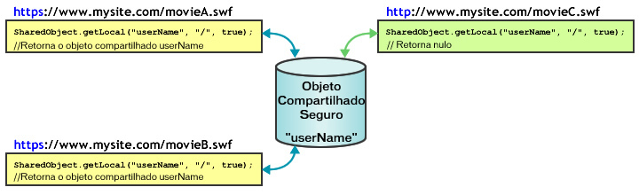

| Pacote | flash.net |
| Classe | public class SharedObject |
| Herança | SharedObject |
| Versão da linguagem: | ActionScript 3.0 |
| Versões de runtime: | AIR 1.0, Flash Player 9, Flash Lite 4 |
Use objetos compartilhados para fazer o seguinte:
-
Manter a persistência local. Essa é a maneira mais simples de usar um objeto compartilhado e não requer o Flash Media Server. Por exemplo, você pode chamar
SharedObject.getLocal()para criar um objeto compartilhado em um aplicativo, como uma calculadora com memória. Quando o usuário fechar a calculadora, o Flash Player salvará o último valor em um objeto compartilhado no computador desse usuário. Da próxima vez que a calculadora for executada, ela conterá os valores anteriores. Como alternativa, se você definir as propriedades do objeto compartilhado comonullantes do encerramento do aplicativo de calculadora, da próxima vez em que esse aplicativo for executado, ele será aberto sem valores. Outro exemplo de manutenção da persistência local é rastrear as preferências de usuários ou outros dados para um site da Web complexo, como um registro de quais artigos foram lidos por um usuário em um site de notícias. O rastreamento dessas informações permite que você exiba os artigos que já foram lidos de maneira diferente dos novos artigos ainda não lidos. O armazenamento dessas informações no computador do usuário reduz a carga do servidor. -
Armazenar e compartilhar dados no Flash Media Server. Um objeto compartilhado pode armazenar dados no servidor a serem recuperados por outros clientes. Por exemplo, chame
SharedObject.getRemote()para criar um objeto compartilhado remoto, como uma lista de telefones, que é persistente no servidor. Sempre que um cliente fizer alterações no objeto compartilhado, os dados revisados estarão disponíveis a todos os clientes atualmente conectados a esse objeto ou a quem se conectar a ele mais tarde. Se o objeto também for persistente localmente e um cliente alterar os dados enquanto não estiver conectado ao servidor, os dados serão copiados no objeto compartilhado remoto da próxima vez em que o cliente se conectar a esse objeto. - Compartilhar dados em tempo real. Um objeto compartilhado pode compartilhar dados entre vários clientes em tempo real. Por exemplo, você pode abrir um objeto compartilhado remoto que armazena uma lista de usuários conectados a uma sala de bate-papo visível a todos os clientes conectados a esse objeto. Quando um usuário entrar ou sair da sala de bate-papo, o objeto será atualizado e todos os clientes conectados a ele verão a lista revisada de usuários da sala de bate-papo.
Para criar um objeto compartilhado local, chame SharedObject.getLocal(). Para criar um objeto compartilhado remoto, chame SharedObject.getRemote().
Quando um aplicativo for encerrado, os objetos compartilhados serão descarregados ou gravados em disco. Você também pode chamar o método flush() para gravar dados em disco explicitamente.
Considerações sobre espaço em disco local. Objetos compartilhados locais têm algumas limitações que são importantes de se considerar no momento de projetar um aplicativo. Às vezes, os arquivos SWF podem não ter permissão para gravar objetos compartilhados locais e, em alguns casos, os dados armazenados nesses objetos podem ser excluídos sem o seu conhecimento. Os usuários do Flash Player podem gerenciar o espaço em disco disponível para domínios individuais ou todos os domínios. Quando os usuários diminuírem a quantidade de espaço em disco disponível, alguns objetos compartilhados locais poderão ser excluídos. Os usuários do Flash Player também têm controles de privacidade que podem impedir que domínios de terceiros (domínios diferentes daquele na barra de endereço do navegador atual) façam a leitura ou a gravação de objetos compartilhados locais. Também observe que, no Mac OS, a partir do AIR 3.3, a localização de objetos compartilhados no local foi alterada. Sendo assim, se você atualizou para o namespace 3.3, pode parecer que os objetos foram perdidos.
Observação: os arquivos SWF que estiverem armazenados e forem executados em um computador local, e não em um servidor remoto, sempre poderão gravar objetos compartilhados de terceiros em disco. Para obter mais informações sobre objetos compartilhados de terceiros, consulte o painel Configurações de armazenamento global na Ajuda do Flash Player.
Convém verificar se existem falhas relacionadas à quantidade de espaço em disco e aos controles de privacidade do usuário. Faça essas verificações ao chamar getLocal() e flush():
-
SharedObject.getLocal()— o Flash Player lançará uma exceção quando ocorrer uma falha em uma chamada para este método; por exemplo, quando o usuário tiver desativado objetos compartilhados de terceiros e o domínio do seu arquivo SWF não corresponder ao domínio na barra de endereço do navegador. -
SharedObject.flush()— o Flash Player lançará uma exceção quando ocorrer uma falha em uma chamada para este método.SharedObjectFlushStatus.FLUSHEDserá retornado quando a chamada for bem-sucedida.SharedObjectFlushStatus.PENDINGserá retornado quando um espaço de armazenamento adicional for necessário. O Flash Player solicita que o usuário permita um aumento no espaço de armazenamento para informações salvas localmente. Posteriormente, o eventonetStatusé despachado com um objeto de informações indicando se o descarregamento foi concluído com êxito ou falha.
Se o seu arquivo SWF tentar criar ou modificar objetos compartilhados locais, certifique-se de que ele tenha pelo menos 215 pixels de largura e 138 pixels de altura (as dimensões mínimas para a exibição da caixa de diálogo que solicita aos usuários o aumento do limite de armazenamento de objetos compartilhados locais). Se as dimensões do seu arquivo SWF forem menores e um aumento no limite de armazenamento for necessário, SharedObject.flush() falhará, retornando SharedObjectFlushedStatus.PENDING e despachando o evento netStatus.
Objetos compartilhados remotos. Com o Flash Media Server, você pode criar e usar objetos compartilhados remotos, que são compartilhados em tempo real por todos os clientes conectados ao seu aplicativo. Quando um cliente alterar uma propriedade de um objeto compartilhado remoto, essa propriedade será alterada para todos os clientes conectados. Você pode usar objetos compartilhados remotos para sincronizar clientes, por exemplo, usuários em um jogo de vários jogadores.
Cada objeto compartilhado remoto tem uma propriedade data que é um objeto contendo propriedades que armazenam dados. Chame setProperty() para alterar uma propriedade do objeto de dados. O servidor atualiza as propriedades, despacha um evento sync e as envia de volta aos clientes conectados.
Você pode optar por tornar os objetos compartilhados remotos persistentes no cliente e/ou no servidor. Por padrão, o Flash Player salva objetos compartilhados remotos localmente persistentes com até 100K de tamanho. Quando você tentar salvar um objeto maior, o Flash Player exibirá a caixa de diálogo Armazenamento local, na qual é possível permitir ou negar armazenamento local para o objeto compartilhado. Certifique-se de que o tamanho do Palco seja de pelo menos 215 por 138 pixels, que são as dimensões mínimas requeridas pelo Flash para exibir a caixa de diálogo.
Se o usuário selecionar Permitir, o servidor salvará o objeto compartilhado e despachará um evento netStatus com uma propriedade code de SharedObject.Flush.Success. Se o usuário selecionar Negar, o servidor não salvará o objeto compartilhado e despachará um evento netStatus com uma propriedade code de SharedObject.Flush.Failed.
Elementos da API relacionados
 Ocultar propriedades públicas herdadas
Ocultar propriedades públicas herdadas Mostrar propriedades públicas herdadas
Mostrar propriedades públicas herdadas| Propriedade | Definido por | ||
|---|---|---|---|
| client : Object
Indica o objeto no qual os métodos de retorno de chamada são invocados. | SharedObject | ||
 | constructor : Object
Uma referência ao objeto de classe ou à função de construtor de uma determinada ocorrência de objeto. | Object | |
| data : Object [somente leitura]
A coleção de atributos designados à propriedade "data" do objeto; esses atributos podem ser armazenados e compartilhados. | SharedObject | ||
| defaultObjectEncoding : uint [estático]
A codificação de objeto padrão (versão AMF) para todos os objetos compartilhados locais criados no arquivo SWF. | SharedObject | ||
| fps : Number [somente gravação]
Especifica o número de vezes por segundo que as alterações de um cliente em um objeto compartilhado são enviadas ao servidor. | SharedObject | ||
| objectEncoding : uint
A codificação de objeto (versão AMF) para este objeto compartilhado. | SharedObject | ||
| preventBackup : Boolean [estático]
Especifica se os objetos locais compartilhados serão armazenados no serviço de backup em nuvem do iOS. | SharedObject | ||
| size : uint [somente leitura]
O tamanho atual do objeto compartilhado, em bytes. | SharedObject | ||
| Método | Definido por | ||
|---|---|---|---|
| addEventListener(type:String, listener:Function, useCapture:Boolean = false, priority:int = 0, useWeakReference:Boolean = false):void
Registra um objeto de ouvinte de evento em um objeto EventDispatcher, de forma que o ouvinte receba a notificação de um evento. | EventDispatcher | |
Para objetos compartilhados locais, expurga todos os dados e exclui o objeto compartilhado do disco. | SharedObject | ||
Encerra a conexão entre um objeto compartilhado remoto e o servidor. | SharedObject | ||
Conecta-se a um objeto compartilhado remoto em um servidor através de um objeto NetConnection especificado. | SharedObject | ||
|
Envia um evento para o fluxo de eventos. | EventDispatcher | |
Grava imediatamente um objeto compartilhado localmente persistente em um arquivo local. | SharedObject | ||
[estático]
Retorna uma referência a um objeto compartilhado localmente persistente que apenas está disponível para o cliente atual. | SharedObject | ||
getRemote(name:String, remotePath:String = null, persistence:Object = false, secure:Boolean = false):SharedObject [estático]
Retorna uma referência a um objeto compartilhado no Flash Media Server que vários clientes podem acessar. | SharedObject | ||
|
Verifica se o objeto EventDispatcher tem ouvintes registrados para um tipo específico de evento. | EventDispatcher | |
|
Indica se um objeto tem uma propriedade especificada definida. | Object | |
|
Indica se uma ocorrência da classe Object está na cadeia de protótipos do objeto especificado como o parâmetro. | Object | |
|
Indica se a propriedade especificada existe e é enumerável. | Object | |
|
Remove um ouvinte do objeto EventDispatcher. | EventDispatcher | |
Transmite uma mensagem a todos os clientes conectados a um objeto compartilhado remoto, incluindo o cliente que enviou essa mensagem. | SharedObject | ||
Indica o servidor no qual o valor de uma propriedade no objeto compartilhado foi alterado. | SharedObject | ||
Atualiza o valor de uma propriedade em um objeto compartilhado e indica ao servidor que o valor dessa propriedade foi alterado. | SharedObject | ||
|
Define a disponibilidade de uma propriedade dinâmica para operações de repetição. | Object | |
|
Retorna a representação da string deste objeto, formatado segundo as convenções específicas para a localidade. | Object | |
|
Retorna a representação de string do objeto especificado. | Object | |
|
Retorna o valor primitivo do objeto especificado. | Object | |
|
Verifica se um ouvinte de evento está registrado nesse objeto EventDispatcher ou em qualquer um de seus ancestrais para o tipo de evento especificado. | EventDispatcher | |
| Evento | Resumo | Definido por | ||
|---|---|---|---|---|
| [transmissão de evento] Despachado quando o Flash Player ou o aplicativo do AIR ganha o foco do sistema operacional e está se tornando inativo. | EventDispatcher | ||
| Despachado quando uma exceção é lançada assincronamente – ou seja, a partir do código assíncrono nativo. | SharedObject | |||
| [transmissão de evento] Despachado quando o Flash Player ou o aplicativo do AIR perde o foco do sistema operacional e está se tornando inativo. | EventDispatcher | ||
| Despachado quando uma ocorrência de SharedObject está relatando seu status ou uma condição de erro. | SharedObject | |||
| Despachado quando um objeto compartilhado remoto foi atualizado pelo servidor. | SharedObject | |||
client | propriedade |
client:Object| Versão da linguagem: | ActionScript 3.0 |
| Versões de runtime: | AIR 1.0, Flash Player 9, Flash Lite 4 |
Indica o objeto no qual os métodos de retorno de chamada são invocados. O objeto padrão é this. É possível definir a propriedade "client" como outro objeto, e os métodos de retorno de chamada serão invocados nesse outro objeto.
Implementação
public function get client():Object public function set client(value:Object):voidLança
TypeError — A propriedade client deve ser definida como um objeto não nulo.
|
data | propriedade |
data:Object [somente leitura] | Versão da linguagem: | ActionScript 3.0 |
| Versões de runtime: | AIR 1.0, Flash Player 9, Flash Lite 4 |
A coleção de atributos designados à propriedade data do objeto; esses atributos podem ser armazenados e compartilhados. Cada atributo pode ser um objeto de qualquer tipo ActionScript ou JavaScript — Array, Number, Boolean, ByteArray, XML e assim por diante. Por exemplo, as linhas a seguir atribuem valores a vários aspectos de um objeto compartilhado:
var items_array:Array = new Array(101, 346, 483);
var currentUserIsAdmin:Boolean = true;
var currentUserName:String = "Ramona";
var my_so:SharedObject = SharedObject.getLocal("superfoo");
my_so.data.itemNumbers = items_array;
my_so.data.adminPrivileges = currentUserIsAdmin;
my_so.data.userName = currentUserName;
for (var prop in my_so.data) {
trace(prop+": "+my_so.data[prop]);
}
Todos os atributos da propriedade data de um objeto compartilhado serão salvos se esse objeto for persistente, e o objeto compartilhado contém as seguintes informações:
userName: Ramona
adminPrivileges: true
itemNumbers: 101,346,483
Observação: Não atribua valores diretamente à propriedade data de um objeto compartilhado, como em so.data = someValue; o Flash Player ignora esse tipo de atribuição.
Para excluir atributos para objetos compartilhados locais, use um código como delete so.data.attributeName. Definir um atributo como null ou undefined para um objeto compartilhado local não exclui esse atributo.
Para criar valores privados para um objeto compartilhado (valores disponíveis somente para a ocorrência do cliente enquanto o objeto estiver em uso e que não são armazenados com esse objeto quando ele é fechado) crie propriedades não denominadas data para armazená-los, como mostra o exemplo a seguir:
var my_so:SharedObject = SharedObject.getLocal("superfoo");
my_so.favoriteColor = "blue";
my_so.favoriteNightClub = "The Bluenote Tavern";
my_so.favoriteSong = "My World is Blue";
for (var prop in my_so) {
trace(prop+": "+my_so[prop]);
}
O objeto compartilhado contém os seguintes dados:
favoriteSong: My World is Blue
favoriteNightClub: The Bluenote Tavern
favoriteColor: blue
data: [object Object]
Para objetos compartilhados remotos usados com um servidor, todos os atributos da propriedade data estão disponíveis a todos os clientes conectados ao objeto compartilhado, e todos os atributos serão salvos se o objeto for persistente. Se um cliente alterar o valor de um atributo, todos os clientes verão o novo valor.
Implementação
public function get data():ObjectElementos da API relacionados
defaultObjectEncoding | propriedade |
defaultObjectEncoding:uint| Versão da linguagem: | ActionScript 3.0 |
| Versões de runtime: | AIR 1.0, Flash Player 9, Flash Lite 4 |
A codificação de objeto padrão (versão AMF) para todos os objetos compartilhados locais criados no arquivo SWF. Quando objetos compartilhados locais são gravados em disco, a propriedade SharedObject.defaultObjectEncoding indica qual versão do AMF (Action Message Format) deve ser usada: o formato ActionScript 3.0 (AMF3) ou o formato ActionScript 1.0 ou 2.0 (AMF0).
Para obter mais informações sobre a codificação de objetos, incluindo a diferença entre a codificação em objetos compartilhados locais e remotos, consulte a descrição da propriedade objectEncoding.
O valor padrão de SharedObject.defaultObjectEncoding é definido de forma a utilizar o formato ActionScript 3.0, AMF3. Se você precisar gravar objetos compartilhados locais que podem ser lidos por arquivos SWF ActionScript 2.0 ou 1.0, defina SharedObject.defaultObjectEncoding de forma a utilizar o formato ActionScript 1.0 ou ActionScript 2.0, flash.net.ObjectEncoding.AMF0, no início do script, antes de você criar objetos compartilhados locais. Todos os objetos compartilhados locais criados dali em diante usarão a codificação AMF0 e poderão interagir com conteúdo mais antigo. Não é possível alterar o valor objectEncoding de objetos compartilhados locais existentes definindo SharedObject.defaultObjectEncoding após a criação dos objetos compartilhados locais.
Para definir a codificação para cada objeto em vez de para todos os objetos compartilhados criados pelo arquivo SWF, defina a propriedade objectEncoding do objeto compartilhado local como alternativa.
Implementação
public static function get defaultObjectEncoding():uint public static function set defaultObjectEncoding(value:uint):voidElementos da API relacionados
fps | propriedade |
fps:Number [somente gravação] | Versão da linguagem: | ActionScript 3.0 |
| Versões de runtime: | AIR 1.0, Flash Player 9, Flash Lite 4 |
Especifica o número de vezes por segundo que as alterações de um cliente em um objeto compartilhado são enviadas ao servidor.
Use esse método quando quiser controlar a quantidade de tráfego entre o cliente e o servidor. Por exemplo, se a conexão entre o cliente e o servidor for relativamente lenta, convém definir fps como um valor relativamente baixo. De modo oposto, se o cliente estiver conectado a um aplicativo para vários usuários no qual a temporização seja importante, convém definir fps como um valor relativamente alto.
Definir fps acionará um evento sync e atualizará todas as alterações no servidor. Se você apenas quiser atualizar o servidor manualmente, defina fps como 0.
As alterações não serão enviadas ao servidor até que o evento sync tenha sido despachado. Ou seja, se o tempo de resposta do servidor for lento, as atualizações poderão ser enviadas ao servidor com menor frequência do que o valor especificado nessa propriedade.
Implementação
public function set fps(value:Number):voidobjectEncoding | propriedade |
objectEncoding:uint| Versão da linguagem: | ActionScript 3.0 |
| Versões de runtime: | AIR 1.0, Flash Player 9, Flash Lite 4 |
A codificação de objeto (versão AMF) para este objeto compartilhado. Quando um objeto compartilhado local é gravado em disco, a propriedade objectEncoding indica qual versão do AMF (Action Message Format) deve ser usada: o formato ActionScript 3.0 (AMF3) ou o formato ActionScript 1.0 ou 2.0 (AMF0).
A codificação de objetos será manipulada de maneira diferente dependendo de o objeto compartilhado ser local ou remoto.
- Objetos compartilhados locais. Você pode obter ou definir o valor da propriedade
objectEncodingpara objetos compartilhados locais. O valor deobjectEncodingafeta qual formatação é usada para a gravação desse objeto compartilhado local. Se esse objeto compartilhado local precisar ser legível por arquivos SWF ActionScript 2.0 ou 1.0, definaobjectEncodingcomoObjectEncoding.AMF0. Mesmo que a codificação de objetos esteja definida para gravar no AMF3, o Flash Player ainda pode ler objetos compartilhados locais AMF0. Ou seja, se você usar o valor padrão dessa propriedade,ObjectEncoding.AMF3, seu arquivo SWF ainda poderá ler os objetos compartilhados criados por arquivos SWF ActionScript 2.0 ou 1.0. - Objetos compartilhados remotos. Quando conectado ao servidor, um objeto compartilhado remoto herda sua configuração de
objectEncodingda ocorrência de NetConnection associada (a ocorrência usada para conexão com o objeto compartilhado remoto). Quando não conectado ao servidor, um objeto compartilhado remoto herda a configuração dedefaultObjectEncodingda ocorrência de NetConnection associada. Como o valor da propriedadeobjectEncodingde um objeto compartilhado remoto é determinado pela ocorrência de NetConnection, essa propriedade é somente leitura para objetos compartilhados remotos.
Implementação
public function get objectEncoding():uint public function set objectEncoding(value:uint):voidLança
ReferenceError — Você tentou definir o valor da propriedade objectEncoding em um objeto compartilhado remoto. Essa propriedade é somente leitura para objetos compartilhados remotos, já que o seu valor é determinado pela ocorrência de NetConnection associada.
|
Elementos da API relacionados
preventBackup | propriedade |
preventBackup:Boolean| Versão da linguagem: | ActionScript 3.0 |
| Versões de runtime: | AIR 3.7 |
Especifica se os objetos locais compartilhados serão armazenados no serviço de backup em nuvem do iOS.
Especifique true ou false:
- true: impede que os objetos locais compartilhados sejam armazenados no serviço de backup em nuvem do iOS.
- false (o padrão): os objetos locais compartilhados serão armazenados no serviço de backup em nuvem do iOS.
Essa propriedade aplica-se somente aos objetos locais compartilhados e é compatível somente com o iOS.
Implementação
public static function get preventBackup():Boolean public static function set preventBackup(value:Boolean):voidsize | propriedade |
size:uint [somente leitura] | Versão da linguagem: | ActionScript 3.0 |
| Versões de runtime: | AIR 1.0, Flash Player 9, Flash Lite 4 |
O tamanho atual do objeto compartilhado, em bytes.
O Flash calcula o tamanho de um objeto compartilhado avançando por todas as suas propriedades de dados. Quanto mais propriedades de dados o objeto tiver, maior será o tempo necessário para estimar o seu tamanho. A estimativa do tamanho do objeto pode exigir um tempo de processamento significativo e, portanto, convém evitar o uso desse método, a não ser que exista uma necessidade específica.
Implementação
public function get size():uintExemplo ( Como usar este exemplo )
"thehobbit". Uma propriedade denominada username é adicionada à propriedade "data" do objeto SharedObject. A propriedade size é então rastreada, retornando o valor indicado.
import flash.net.SharedObject;
// if these get copied or not
var mySo:SharedObject = SharedObject.getLocal("thehobbit");
mySo.data.username = "bilbobaggins";
trace(mySo.size); // 55
clear | () | método |
public function clear():void| Versão da linguagem: | ActionScript 3.0 |
| Versões de runtime: | AIR 1.0, Flash Player 9, Flash Lite 4 |
Para objetos compartilhados locais, expurga todos os dados e exclui o objeto compartilhado do disco. A referência ao objeto compartilhado permanece ativa, mas suas propriedades de dados são excluídas.
Para objetos compartilhados remotos usados com o Flash Media Server, clear() desconecta o objeto e expurga todos os dados. Se o objeto compartilhado for localmente persistente, esse método também excluirá o objeto compartilhado do disco. A referência ao objeto compartilhado permanece ativa, mas suas propriedades de dados são excluídas.
Exemplo ( Como usar este exemplo )
hostName. Uma propriedade denominada username é adicionada à propriedade "data" do objeto SharedObject. O método clear() é finalmente chamado, limpando todas as informações que foram adicionadas ao objeto de dados (nesse caso, uma única propriedade denominada username).
package {
import flash.net.SharedObject;
public class SharedObject_clear {
private var hostName:String = "yourDomain";
private var username:String = "yourUsername";
public function SharedObject_clear() {
var mySo:SharedObject = SharedObject.getLocal(hostName);
if(mySo.data.username == null) {
mySo.data.username = username;
trace("set: " + mySo.data.username); // yourUsername
}
else {
mySo.clear();
trace("cleared: " + mySo.data.username); // undefined
}
}
}
}
close | () | método |
public function close():void| Versão da linguagem: | ActionScript 3.0 |
| Versões de runtime: | AIR 1.0, Flash Player 9, Flash Lite 4 |
Encerra a conexão entre um objeto compartilhado remoto e o servidor. Se um objeto compartilhado remoto for localmente persistente, o usuário poderá fazer alterações na cópia local do objeto depois que esse método for chamado. As alterações feitas no objeto local serão enviadas ao servidor da próxima vez que o usuário se conectar ao objeto compartilhado remoto.
connect | () | método |
public function connect(myConnection:NetConnection, params:String = null):void| Versão da linguagem: | ActionScript 3.0 |
| Versões de runtime: | AIR 1.0, Flash Player 9, Flash Lite 4 |
Conecta-se a um objeto compartilhado remoto em um servidor através de um objeto NetConnection especificado. Use esse método depois de chamar getRemote(). Quando uma conexão for bem-sucedida, o evento sync será despachado.
Antes de tentar trabalhar com um objeto compartilhado remoto, verifique primeiro se existem erros usando uma instrução try..catch..finally. Em seguida, forneça e manipule o evento sync antes de fazer alterações no objeto compartilhado. Todas as alterações feitas localmente (antes de o evento sync ser despachado) poderão ser perdidas.
Chame o método connect() para se conectar a um objeto compartilhado remoto, por exemplo:
var myRemoteSO:SharedObject = SharedObject.getRemote("mo", myNC.uri, false);
myRemoteSO.connect(myNC);
Parâmetros
myConnection:NetConnection — Um objeto NetConnection que usa o RTMP (Real-Time Messaging Protocol), como um objeto NetConnection usado para comunicação com o Flash Media Server.
| |
params:String (default = null) |
Lança
Error — O Flash Player não pode se conectar ao objeto compartilhado remoto especificado. Verifique se a ocorrência de NetConnection é válida e está conectada e se o objeto compartilhado remoto foi criado com êxito no servidor.
|
Elementos da API relacionados
flush | () | método |
public function flush(minDiskSpace:int = 0):String| Versão da linguagem: | ActionScript 3.0 |
| Versões de runtime: | AIR 1.0, Flash Player 9, Flash Lite 4 |
Grava imediatamente um objeto compartilhado localmente persistente em um arquivo local. Se você não usar esse método, o Flash Player gravará o objeto compartilhado em um arquivo quando a sessão desse objeto compartilhado for encerrada; ou seja, quando o arquivo SWF for fechado, quando o objeto compartilhado for coletado como lixo por não ter mais referências ao arquivo ou quando você chamar SharedObject.clear() ou SharedObject.close().
Se esse método retornar SharedObjectFlushStatus.PENDING, o Flash Player exibirá uma caixa de diálogo solicitando que o usuário aumente a quantidade de espaço em disco disponível a objetos deste domínio. Para permitir espaço de forma que o objeto compartilhado possa crescer quando for salvo no futuro, evitando assim valores de retorno de PENDING, transmita um valor para espaçoDiscoMin. Quando o Flash Player tentar gravar o arquivo, ele procurará pelo número de bytes transmitidos a espaçoDiscoMin, em vez de procurar por um espaço suficiente para salvar o objeto compartilhado com seu tamanho atual.
Por exemplo, se você espera que um objeto compartilhado cresça até um tamanho máximo de 500 bytes, mesmo que ele possa começar muito menor, transmita 500 para espaçoDiscoMin. Se o Flash solicitar que o usuário aloque espaço em disco para o objeto compartilhado, ele solicitará 500 bytes. Depois que o usuário alocar a quantidade de espaço requerida, o Flash não precisará solicitar mais espaço em tentativas futuras de descarregar o objeto (desde que o tamanho não exceda 500 bytes).
Depois que o usuário responder à caixa de diálogo, esse método será novamente chamado. Um evento netStatus é despachado com uma propriedade code de SharedObject.Flush.Success ou SharedObject.Flush.Failed.
Parâmetros
minDiskSpace:int (default = 0) |
String — Um destes valores:
|
Lança
Error — O Flash Player não pode gravar o objeto compartilhado em disco. Esse erro poderá ocorrer se o usuário tiver proibido permanentemente o armazenamento de informações locais para objetos a partir desse domínio.
Observação: O conteúdo local sempre pode gravar em disco os objetos compartilhados a partir de domínios de terceiros (domínios diferentes daquele na barra de endereços do navegador atual), mesmo se a gravação em disco de objetos compartilhados de terceiros não for permitida. |
Elementos da API relacionados
Exemplo ( Como usar este exemplo )
hostName. Uma propriedade denominada username é adicionada à propriedade "data" do objeto SharedObject. O método flush() é então chamado, seguido de uma verificação para determinar se a string pending, ou um valor booliano de true ou false, foi retornado. É necessário considerar que todas as ocorrências abertas de SharedObject serão automaticamente descarregadas sempre que a ocorrência atual do Flash Player for fechada.
package {
import flash.net.SharedObject;
public class SharedObject_flush {
private var hostName:String = "yourDomain";
private var username:String = "yourUsername";
public function SharedObject_flush() {
var mySo:SharedObject = SharedObject.getLocal(hostName);
mySo.data.username = username;
var flushResult:Object = mySo.flush();
trace("flushResult: " + flushResult);
trace(mySo.data.username); // yourUsername
}
}
}
getLocal | () | método |
public static function getLocal(name:String, localPath:String = null, secure:Boolean = false):SharedObject| Versão da linguagem: | ActionScript 3.0 |
| Versões de runtime: | AIR 1.0, Flash Player 9, Flash Lite 4 |
Retorna uma referência a um objeto compartilhado localmente persistente que apenas está disponível para o cliente atual. Se o objeto compartilhado ainda não existir, esse método criará um. Se os valores transmitidos a getLocal() forem inválidos ou se a chamada falhar, o Flash Player lançará uma exceção.
O código a seguir mostra como atribuir à referência retornada do objeto compartilhado a uma variável:
var so:SharedObject = SharedObject.getLocal("savedData");
Observação: Se o usuário tiver optado por nunca permitir o armazenamento local para esse domínio, o objeto não será salvo localmente, mesmo que um valor para caminhoLocal seja especificado. A exceção a essa regra é o conteúdo local. O conteúdo local sempre pode gravar em disco os objetos compartilhados a partir de domínios de terceiros (domínios diferentes daquele na barra de endereços do navegador atual), mesmo se a gravação em disco de objetos compartilhados de terceiros não for permitida.
Para evitar conflitos de nome, o Flash examina a localização do arquivo SWF que está criando o objeto compartilhado. Por exemplo, se um arquivo SWF em www.myCompany.com/apps/stockwatcher.swf criar um objeto compartilhado denominado portfolio, esse objeto compartilhado não entrará em conflito com outro objeto denominado portfolio que foi criado por um arquivo SWF em www.yourCompany.com/photoshoot.swf, já que esses arquivos SWF foram originados em diretórios diferentes.
Embora o parâmetro caminhoLocal seja opcional, é necessário considerar o seu uso, especialmente se outros arquivos SWF precisarem de acesso ao objeto compartilhado. Se os dados no objeto compartilhado forem específicos para um arquivo SWF que não será movido para outro local, convém usar o valor padrão. Se outros arquivos SWF precisarem de acesso ao objeto compartilhado ou se o arquivo SWF que o criar for ser movido mais tarde, o valor desse parâmetro afetará o grau de acessibilidade do objeto compartilhado. Por exemplo, se você criar um objeto compartilhado com caminhoLocal definido como o valor padrão do caminho local para o arquivo SWF, nenhum outro arquivo SWF poderá acessar esse objeto compartilhado. Se, mais tarde, você mover o arquivo SWF original para outro local, nem mesmo esse arquivo SWF poderá acessar os dados já armazenados no objeto compartilhado.
Para evitar a restrição inadvertida do acesso a um objeto compartilhado, use o parâmetro caminhoLocal. A abordagem mais permissiva é definir caminhoLocal como / (barra), o que torna o objeto compartilhado disponível para todos os arquivos SWF no domínio, mas aumenta as chances de conflitos de nome com outros objetos compartilhados nesse domínio. Uma abordagem mais restritiva é acrescentar caminhoLocal com nomes de pastas que estejam no caminho completo para o arquivo SWF. Por exemplo, para um objeto compartilhado portfolio criado pelo arquivo SWF em www.myCompany.com/apps/stockwatcher.swf, você poderia definir o parâmetro localPath como /, /apps ou /apps/stockwatcher.swf. Determine qual abordagem proporciona flexibilidade ideal para o seu aplicativo.
Ao usar esse método, considere o seguinte modelo de segurança:
- Não é possível acessar objetos compartilhados entre limites de caixa de proteção.
- Os usuários podem restringir o acesso a objetos compartilhados usando a caixa de diálogo Configurações do Flash Player ou o Gerenciador de configurações. Por padrão, um aplicativo pode criar objetos compartilhados de até 100 KB de dados por domínio. Administradores e usuários também podem aplicar restrições quanto à capacidade de gravar no sistema de arquivos.
Suponha que você publique um conteúdo de arquivo SWF a ser reproduzido como arquivos locais (sejam arquivos EXE ou arquivos SWF localmente instalados) e precise acessar um objeto compartilhado específico a partir de mais de um arquivo SWF local. Nessa situação, lembre-se de que, para arquivos locais, duas localizações diferentes podem ser usadas para armazenar objetos compartilhados. O domínio usado depende das permissões de segurança concedidas ao arquivo que criou o objeto compartilhado. Arquivos locais podem ter três níveis diferentes de permissões:
- Acesso ao sistema de arquivos local apenas.
- Acesso à rede apenas.
- Acesso à rede e ao sistema de arquivos local.
Arquivos locais com acesso ao sistema de arquivos local (nível 1 ou 3) armazenam seus objetos compartilhados em um local. Arquivos locais sem acesso ao sistema de arquivos local (nível 2) armazenam seus objetos compartilhados em outro local.
Você pode impedir o arquivo SWF de usar esse método configurando o parâmetro allowNetworking das marcas object e embed na página HTML com o conteúdo SWF.
Para obter mais informações, consulte o tópico do Centro de desenvolvedores do Flash Player: Security.
Parâmetros
name:String — O nome do objeto. O nome pode incluir barras (/); por exemplo, endereços/comerciais é um nome legal. Espaços não são permitidos em um nome de objeto compartilhado, além dos seguintes caracteres:
~ % & \ ; : " ' , < > ? # | |
localPath:String (default = null) | |
secure:Boolean (default = false)
Se o seu arquivo SWF for entregue via conexão não HTTPS e você tentar definir esse parâmetro como O diagrama a seguir mostra o uso do parâmetro  |
SharedObject — Uma referência a um objeto compartilhado que é localmente persistente e apenas está disponível para o cliente atual. Se o Flash Player não puder criar ou localizar o objeto compartilhado (por exemplo, se localPath tiver sido especificado, mas esse diretório não existir), esse método lançará uma exceção.
|
Lança
Error — O Flash Player não pode criar o objeto compartilhado por um determinado motivo. Esse erro poderá ocorrer se o procedimento de criação e armazenamento de objetos compartilhados persistentes por um conteúdo do Flash de terceiros for proibido (não se aplica ao conteúdo local). Os usuários podem proibir objetos compartilhados persistentes de terceiros no painel Configurações de armazenamento global do Gerenciador de configurações, localizado em http://www.adobe.com/support/documentation/br/flashplayer/help/settings_manager03.html.
|
getRemote | () | método |
public static function getRemote(name:String, remotePath:String = null, persistence:Object = false, secure:Boolean = false):SharedObject| Versão da linguagem: | ActionScript 3.0 |
| Versões de runtime: | AIR 1.0, Flash Player 9, Flash Lite 4 |
Retorna uma referência a um objeto compartilhado no Flash Media Server que vários clientes podem acessar. Se o objeto compartilhado remoto ainda não existir, esse método criará um.
Para criar um objeto compartilhado remoto, chame getRemote() e, em seguida, connect() para conectar esse objeto ao servidor, como a seguir:
var nc:NetConnection = new NetConnection();
nc.connect("rtmp://somedomain.com/applicationName");
var myRemoteSO:SharedObject = SharedObject.getRemote("mo", nc.uri, false);
myRemoteSO.connect(nc);
Para confirmar se as cópias local e remota do objeto compartilhado estão sincronizadas, forneça e manipule o evento sync. Todos os clientes que quiserem compartilhar esse objeto precisarão transmitir os mesmos valores para os parâmetros name e caminhoRemoto.
Para criar um objeto compartilhado disponível apenas ao cliente atual, use SharedObject.getLocal().
Parâmetros
name:String — O nome do objeto compartilhado remoto. O nome pode incluir barras (/); por exemplo, endereços/comerciais é um nome legal. Espaços não são permitidos em um nome de objeto compartilhado, além dos seguintes caracteres:
~ % & \ ; : " ' , > ? ? # | |
remotePath:String (default = null)connect().
| |
persistence:Object (default = false)
Observação: Se o usuário tiver optado por nunca permitir o armazenamento local para esse domínio, o objeto não será salvo localmente, mesmo que um caminho local seja especificado para persistência. Para obter mais informações, consulte a descrição da classe. | |
secure:Boolean (default = false)protegido na entrada do método getLocal.
|
SharedObject — Uma referência a um objeto que pode ser compartilhado entre vários clientes.
|
Lança
Error — O Flash Player não pode criar ou localizar o objeto compartilhado. Isso poderá ocorrer se caminhos inexistentes tiverem sido especificados para os parâmetros caminhoRemoto e persistência.
|
Elementos da API relacionados
send | () | método |
public function send(... arguments):void| Versão da linguagem: | ActionScript 3.0 |
| Versões de runtime: | AIR 1.0, Flash Player 9, Flash Lite 4 |
Transmite uma mensagem a todos os clientes conectados a um objeto compartilhado remoto, incluindo o cliente que enviou essa mensagem. Para processar e responder à mensagem, crie uma função de retorno de chamada anexada ao objeto compartilhado.
Parâmetros
... arguments — Um ou mais argumentos: Uma string que identifica a mensagem, o nome de uma ou mais funções de manipulador a serem anexadas ao objeto compartilhado e parâmetros opcionais de qualquer tipo. O nome do manipulador pode ter profundidade de apenas um nível (ou seja, não pode estar no formato pai/filho) e é relativo ao objeto compartilhado. Os argumentos são serializados e despachados pela conexão, e o manipulador de recebimento os recebe na mesma ordem. Se um parâmetro for um objeto circular (por exemplo, uma lista vinculada circular), o serializador manipulará as referências corretamente.
Observação: Não use um termo reservado para os nomes de funções. Por exemplo, |
setDirty | () | método |
public function setDirty(propertyName:String):void| Versão da linguagem: | ActionScript 3.0 |
| Versões de runtime: | AIR 1.0, Flash Player 9, Flash Lite 4 |
Indica o servidor no qual o valor de uma propriedade no objeto compartilhado foi alterado. Esse método marca propriedades como dirty; ou seja, alteradas.
Chame SharedObject.setProperty() para criar propriedades para um objeto compartilhado.
O método SharedObject.setProperty() implementa setDirty(). Na maioria dos casos, por exemplo, quando o valor de uma propriedade é um tipo primitivo, como String ou Number, você pode chamar setProperty() em vez de setDirty(). Entretanto, quando o valor de uma propriedade for um objeto que contém suas próprias propriedades, chame setDirty() para indicar quando um valor dentro do objeto tiver sido alterado.
Parâmetros
propertyName:String — O nome da propriedade que foi alterada.
|
Elementos da API relacionados
setProperty | () | método |
public function setProperty(propertyName:String, value:Object = null):void| Versão da linguagem: | ActionScript 3.0 |
| Versões de runtime: | AIR 1.0, Flash Player 9, Flash Lite 4 |
Atualiza o valor de uma propriedade em um objeto compartilhado e indica ao servidor que o valor dessa propriedade foi alterado. O método setProperty() marca explicitamente as propriedades como alteradas, ou "dirty".
Para obter mais informações sobre objetos compartilhados remotos, consulte a documentação do Flash Media Server.
Observação: O método SharedObject.setProperty()implementa o método setDirty(). Na maioria dos casos, por exemplo, quando o valor de uma propriedade é um tipo primitivo, como String ou Number, você pode usar setProperty() em vez de setDirty(). Entretanto, quando o valor de uma propriedade for um objeto que contém suas próprias propriedades, use setDirty() para indicar quando um valor dentro do objeto tiver sido alterado. Em geral, convém chamar setProperty() em vez de setDirty(), uma vez que setProperty() apenas atualizará um valor de propriedade quando esse valor tiver sido alterado, enquanto setDirty() força a sincronização em todos os clientes inscritos.
Parâmetros
propertyName:String — O nome da propriedade no objeto compartilhado.
| |
value:Object (default = null)null para excluir a propriedade.
|
Elementos da API relacionados
asyncError | Evento |
flash.events.AsyncErrorEventpropriedade AsyncErrorEvent.type =
flash.events.AsyncErrorEvent.ASYNC_ERROR| Versão da linguagem: | ActionScript 3.0 |
| Versões de runtime: | AIR 1.0, Flash Player 9, Flash Lite 4 |
Despachado quando uma exceção é lançada assincronamente – ou seja, a partir do código assíncrono nativo.
A constanteAsyncErrorEvent.ASYNC_ERROR define o valor da propriedade type de um objeto de evento asyncError.
Esse evento tem as seguintes propriedades:
| Propriedade | Valor |
|---|---|
bubbles | false |
cancelable | false; não há comportamento padrão a ser cancelado. |
currentTarget | O objeto que está processando ativamente o objeto Event com um ouvinte de evento. |
target | O objeto que está enviando o evento. |
error | O erro que disparou o evento. |
netStatus | Evento |
flash.events.NetStatusEventpropriedade NetStatusEvent.type =
flash.events.NetStatusEvent.NET_STATUS| Versão da linguagem: | ActionScript 3.0 |
| Versões de runtime: | AIR 1.0, Flash Player 9, Flash Lite 4 |
Despachado quando uma ocorrência de SharedObject está relatando seu status ou uma condição de erro. O evento netStatus contém uma propriedade info, que é um objeto de informações contendo informações específicas sobre esse evento; por exemplo, se uma tentativa de conexão foi bem-sucedida ou se o objeto compartilhado foi gravado com êxito no disco local.
type de um objeto de evento netStatus.
Esse evento tem as seguintes propriedades:
| Propriedade | Valor |
|---|---|
bubbles | false |
cancelable | false; não há comportamento padrão a ser cancelado. |
currentTarget | O objeto que está processando ativamente o objeto Event com um ouvinte de evento. |
info | Um objeto com propriedades que descrevem o status ou condição de erro do objeto. |
target | O objeto NetConnection ou o NetStream reportando o respectivo status. |
Elementos da API relacionados
sync | Evento |
flash.events.SyncEventpropriedade SyncEvent.type =
flash.events.SyncEvent.SYNC| Versão da linguagem: | ActionScript 3.0 |
| Versões de runtime: | AIR 1.0, Flash Player 9, Flash Lite 4 |
Despachado quando um objeto compartilhado remoto foi atualizado pelo servidor.
Define o valor da propriedadetype de um objeto de eventosync.
Esse evento tem as seguintes propriedades:
| Propriedade | Valor |
|---|---|
bubbles | false |
cancelable | false; não há comportamento padrão a ser cancelado. |
currentTarget | O objeto que está processando ativamente o objeto Event com um ouvinte de evento. |
changeList | Uma matriz com propriedades que descrevem o status da matriz. |
target | A ocorrência SharedObject que foi atualizada pelo servidor. |
Elementos da API relacionados
"application-name". Quando o botão Salvar é pressionado, o método saveValue() tenta salvar uma propriedade denominada savedValue na propriedade data do objeto SharedObject. Se o Flash Player tiver que solicitar permissão para salvar os dados, quando o usuário conceder ou negar a permissão, o método onFlushStatus() será chamado. Quando o botão Limpar é pressionado, o método clearValue() exclui o valor salvo em savedValue. Da próxima vez em que o arquivo SWF for carregado, o valor recuperado será undefined.
package {
import flash.display.Sprite;
import flash.events.MouseEvent;
import flash.events.NetStatusEvent;
import flash.net.SharedObject;
import flash.net.SharedObjectFlushStatus;
import flash.text.TextField;
import flash.text.TextFieldAutoSize;
import flash.text.TextFieldType;
public class SharedObjectExample extends Sprite {
private var mySo:SharedObject;
public function SharedObjectExample() {
buildUI();
saveBtn.addEventListener(MouseEvent.CLICK, saveValue);
clearBtn.addEventListener(MouseEvent.CLICK, clearValue);
mySo = SharedObject.getLocal("application-name");
output.appendText("SharedObject loaded...\n");
output.appendText("loaded value: " + mySo.data.savedValue + "\n\n");
}
private function saveValue(event:MouseEvent):void {
output.appendText("saving value...\n");
mySo.data.savedValue = input.text;
var flushStatus:String = null;
try {
flushStatus = mySo.flush(10000);
} catch (error:Error) {
output.appendText("Error...Could not write SharedObject to disk\n");
}
if (flushStatus != null) {
switch (flushStatus) {
case SharedObjectFlushStatus.PENDING:
output.appendText("Requesting permission to save object...\n");
mySo.addEventListener(NetStatusEvent.NET_STATUS, onFlushStatus);
break;
case SharedObjectFlushStatus.FLUSHED:
output.appendText("Value flushed to disk.\n");
break;
}
}
output.appendText("\n");
}
private function clearValue(event:MouseEvent):void {
output.appendText("Cleared saved value...Reload SWF and the value should be \"undefined\".\n\n");
delete mySo.data.savedValue;
}
private function onFlushStatus(event:NetStatusEvent):void {
output.appendText("User closed permission dialog...\n");
switch (event.info.code) {
case "SharedObject.Flush.Success":
output.appendText("User granted permission -- value saved.\n");
break;
case "SharedObject.Flush.Failed":
output.appendText("User denied permission -- value not saved.\n");
break;
}
output.appendText("\n");
mySo.removeEventListener(NetStatusEvent.NET_STATUS, onFlushStatus);
}
// UI elements
private var inputLbl:TextField;
private var input:TextField;
private var output:TextField;
private var saveBtn:Sprite;
private var clearBtn:Sprite;
private function buildUI():void {
// input label
inputLbl = new TextField();
addChild(inputLbl);
inputLbl.x = 10;
inputLbl.y = 10;
inputLbl.text = "Value to save:";
// input TextField
input = new TextField();
addChild(input);
input.x = 80;
input.y = 10;
input.width = 100;
input.height = 20;
input.border = true;
input.background = true;
input.type = TextFieldType.INPUT;
// output TextField
output = new TextField();
addChild(output);
output.x = 10;
output.y = 35;
output.width = 250;
output.height = 250;
output.multiline = true;
output.wordWrap = true;
output.border = true;
output.background = true;
// Save button
saveBtn = new Sprite();
addChild(saveBtn);
saveBtn.x = 190;
saveBtn.y = 10;
saveBtn.useHandCursor = true;
saveBtn.graphics.lineStyle(1);
saveBtn.graphics.beginFill(0xcccccc);
saveBtn.graphics.drawRoundRect(0, 0, 30, 20, 5, 5);
var saveLbl:TextField = new TextField();
saveBtn.addChild(saveLbl);
saveLbl.text = "Save";
saveLbl.selectable = false;
// Clear button
clearBtn = new Sprite();
addChild(clearBtn);
clearBtn.x = 230;
clearBtn.y = 10;
clearBtn.useHandCursor = true;
clearBtn.graphics.lineStyle(1);
clearBtn.graphics.beginFill(0xcccccc);
clearBtn.graphics.drawRoundRect(0, 0, 30, 20, 5, 5);
var clearLbl:TextField = new TextField();
clearBtn.addChild(clearLbl);
clearLbl.text = "Clear";
clearLbl.selectable = false;
}
}
}
Wed Jun 13 2018, 11:10 AM Z